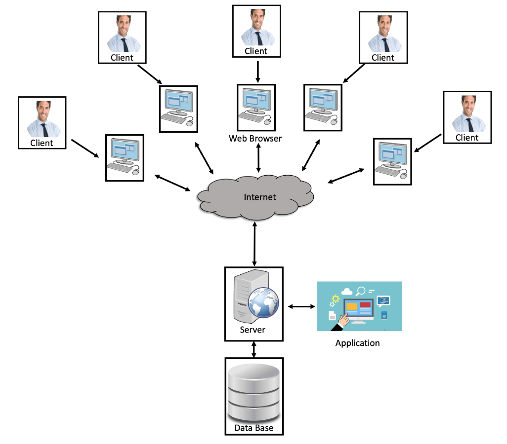

Distribution and Communication |
|
||||||
|
Bookee’s architectural components will be distributed using a service-oriented architecture. This architectural structure allows Bookee the flexibility to start on a small scale but quickly ramp up with user demand due to the greater efficiency, reliability and scalability that service-oriented architecture provides. It is efficient in that it allows multiple users the ability to access the server at one time from a variety of locations. This will provide Bookee with an opportunity to offer its services to providers and customers all around the country from day one, which has a positive effect on Bookee’s time to market. This architecture also increases Bookee’s reliability due to the replaceability of service components that this architecture allows. If a service component ever goes out, interruptions will be kept to a minimum as that service component can quickly be replaced, or several redundant service components can be built into this structure with no noticeable effect on performance.  The same features of service-oriented architecture that enhance its reliability also benefit Bookee’s scalability. This distribution model will allow Bookee to add service components based on user demands, whether that's due to increased traffic or contracting with a business or organization that wants a customized application interface or a dedicated database. Bookee will be able to add these stateless components with ease, while not disrupting service to other users. Components will communicate with each other using a partially integrated structure. As described in question one, Bookee will utilize a layered chain of command between components that establishes a structured communication path, that reduces cross-cutting, utilizes security systems, and keeps the communication flowing. Requests from the user will be communicated through Bookee’s web-based UI to our cloud-based server. This server then acts as the intermediary between the user, the application and the database sending communications back and forth to them as necessary. At no point can the user directly access the application or database without passing through the cloud servers built in security. The cloud server analyses the traffic and only allows legitimate users to gain access. The application component and database will also not have direct communication with each other, they will be aware of each other and communicate through the server as needed. This further enhances security protocols and limits data leakage. It also reduces cross cutting, if the database and application were on separate layers, one would need to cross over the other one to talk to the server. |
|||||||
|
Designed By: Team Alguyrithms @2023 |
|||||||